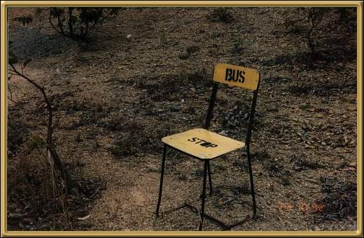

Photographer: Jean Stokes
This is a fair dinkum Bus Stop, somewhere along the Pacific Highway near Woolongong. I can't imagine where the bus might be going, or who would be waiting for it! But it's rather intriguing!